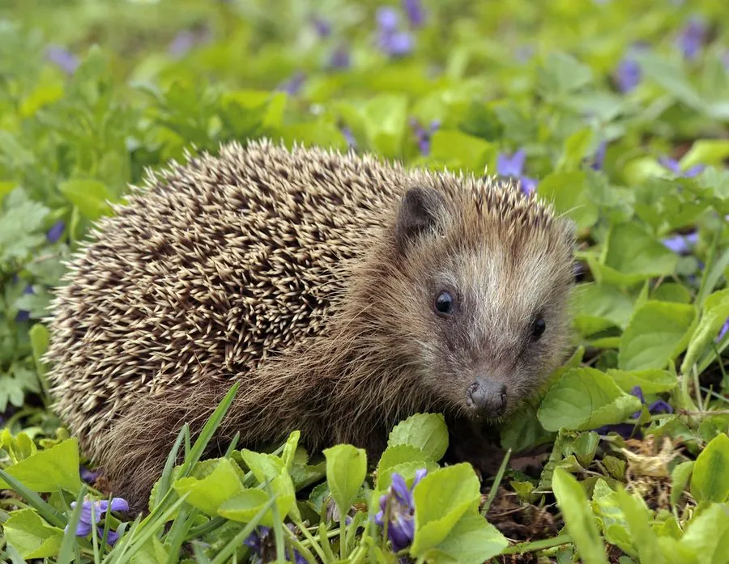

哺乳动物 · 动物界
刺猬 Erinaceus europaeus

欧洲常见的食虫小兽，背部覆盖约 5000 根尖刺，遇险时卷成刺球，夜间在花园和草地捕食昆虫、蚯蚓。
- 分类
- 门脊索动物门纲哺乳纲目猬形目科猬科属猬属
- 栖息环境
- 森林、草地、农田与城市花园
- 地理分布
- 欧洲、西亚和北非，被引入新西兰等地
- 保护级别
- IUCN 无危（LC）；非中国分布物种
物种志
西欧刺猬体长 20–30 厘米，体重 600–1200 克，秋季冬眠前可达 2000 克。它的背部覆盖 5000–7000 根黄褐色与黑褐色相间的尖刺，腹部和四肢覆盖柔软的灰褐色毛；吻部尖长，眼睛小而圆，耳朵短。
刺猬分布于欧洲、西亚和北非，被引入新西兰等地，栖息在森林、草地、农田和城市花园。它夜间活动，以蚯蚓、昆虫、蜗牛、蛙和浆果为食，靠灵敏的嗅觉寻找猎物。遇险时刺猬会把身体卷成刺球，竖起尖刺保护腹部。秋季它大量进食积累脂肪，冬季进入冬眠。雌性妊娠期约 35 天，每胎 4–6 仔，寿命约 3–7 年。刺猬整体被列为无危，但道路车辆和农药使用使部分地区数量下降。
形态与习性
- 食性蚯蚓、昆虫、蜗牛、蛙与浆果
- 体长20–30 cm
- 体重600–1200 g
- 寿命3–7 年
- 繁殖妊娠约 35 天，每胎 4–6 仔
- 尖刺5000–7000 根
趣味知识
- 刺猬背部约有 5000–7000 根尖刺，遇险时卷成刺球。
- 它夜间靠嗅觉寻找蚯蚓和昆虫，是花园里的除虫帮手。
- 刺猬冬眠前会大量进食，体重可增加近一倍。